Fixing Glitchy Displays
This page describes two methods of fixing the glitchy display problems. The easiest one is the oven method, which involves reheating the glue to reattach the cables to the displays. This typically works well, but since the underlying problem isn't really addressed, it is likely to reoccur (and I have seen the problem reoccur, and others have as well). The second method is more difficult, but should be a permanent fix. This involves soldering the cable to the display by chemically dissolving the coating over the cable, exposing the bare copper.Below are two pictures of what you may encounter with LED ribbon cable problems. There are other problems that could be caused by bad connections (blank screen, solid red screen, etc), but these are the most common.
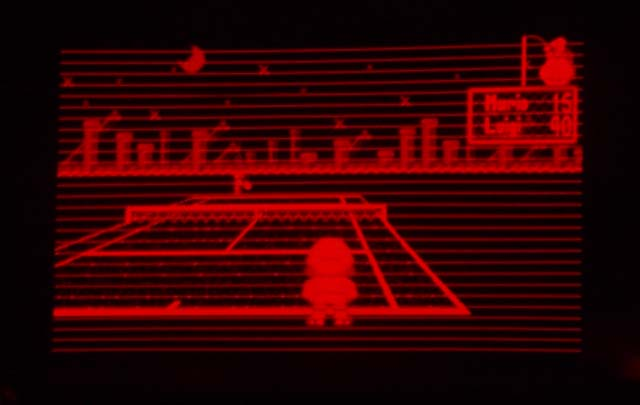
Constant horizontal lines across the display
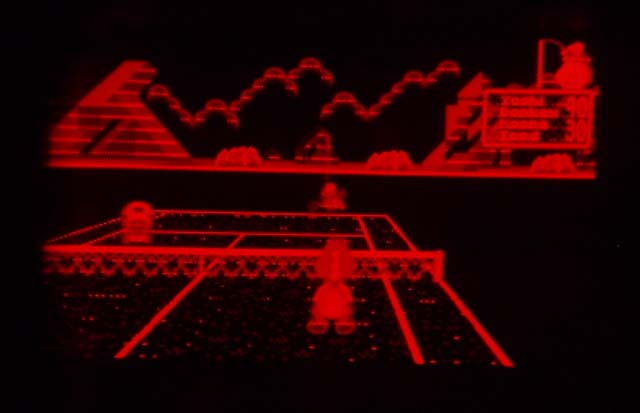
Partial horizontal lines and random noise
To fix, first you're going to need to open up your Virtual Boy system. Click HERE for instructions how. You don't need to completely disassemble, just enough to get to the LED bar displays. Once apart, follow these instructions:
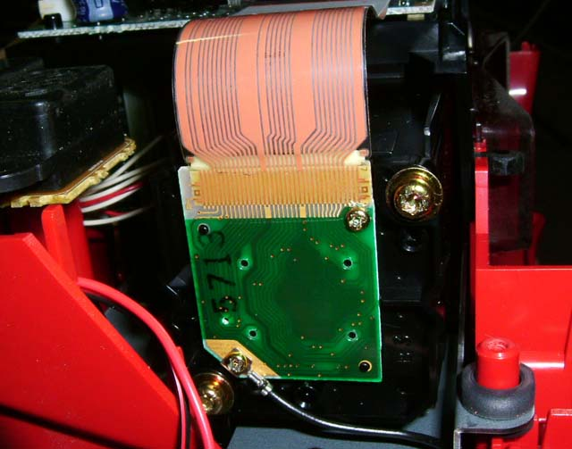
This is what you need to get to. Unscrew the two small phillips screws
holding the LED PCB to the plastic case (DON'T unscrew the star screws
or you may mess up the alignment). Pull the cable straight out of the
socket on the motherboard.
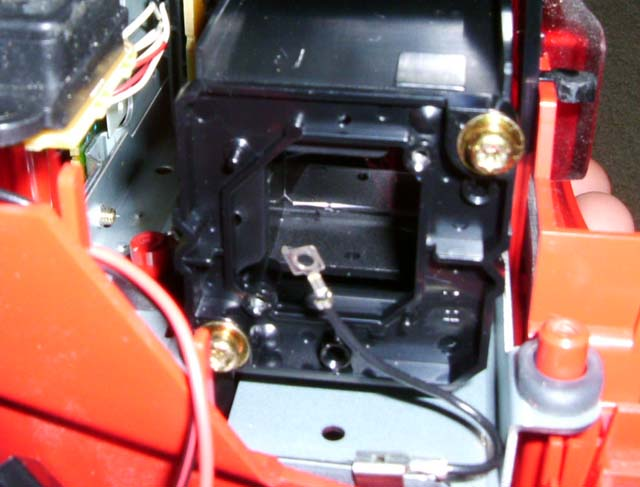
This is what it will look like after removed.
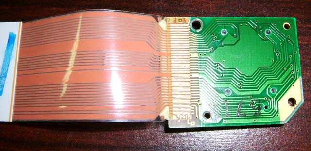
Here is the display removed.
Here's where you get to "Choose Your Own Adventure".
Method 1: Oven Method
Method 2: Solder Method
A little history about this problem. I don't believe this problem is necessarily related to abuse. The cables are very light and nothing is loose enough that would get knocked free if subjected to shock (I'm not saying it's okay to beat up the system... there are other parts that won't take the abuse). I saw this problem with my personal system (which I take very good care of) several years ago and decided to attempt to fix it. I tried several methods, but these are the ones I've found to work best. Another interesting fact... I had a BRAND NEW Virtual Boy system a while ago... BOTH displays had problems related to the cables. I believe the problem is actually caused more by the IPD adjustment than anything. The brand new system had the IPD adjustment turned in, which caused the display cables to be pushed outward, detaching it from the rubber glue and of course causing glitchy displays (see pic below). So, it may be a good idea to turn your IPD outward if you plan on storing it for a while. Note: The rubber glue isn't important to the proper function of the display, it's merely a reinforcement.
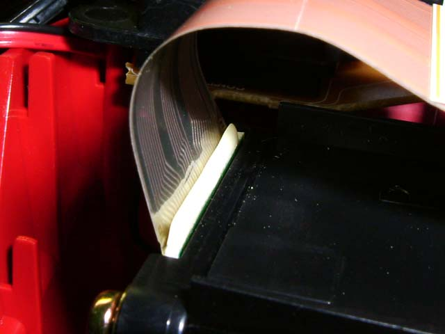
Notice the rubber is seperated from the cable.
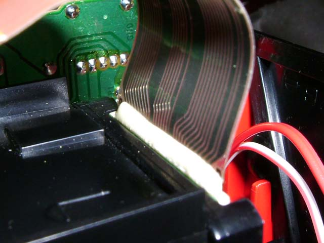
Compared to another display where the rubber is still attached.
After you put it back together, you might want to put in standard phillips screws to make it easier to put together and so you can open it again if you want, and you should check the alignment by inserting a game and pressing Left, B, Down, A, Up on the right D-Pad.
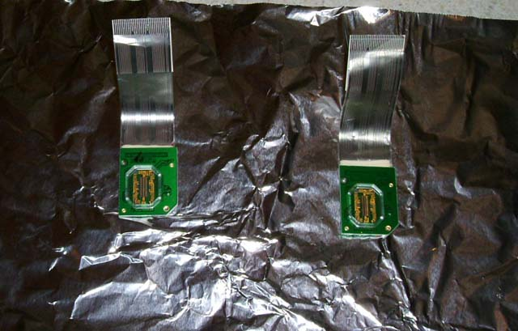
Take one or both displays and lay them on a piece of aluminum foil or
baking pan with the clear plastic cover and cable pointing up. Preheat
the oven to 180-200 degrees F.
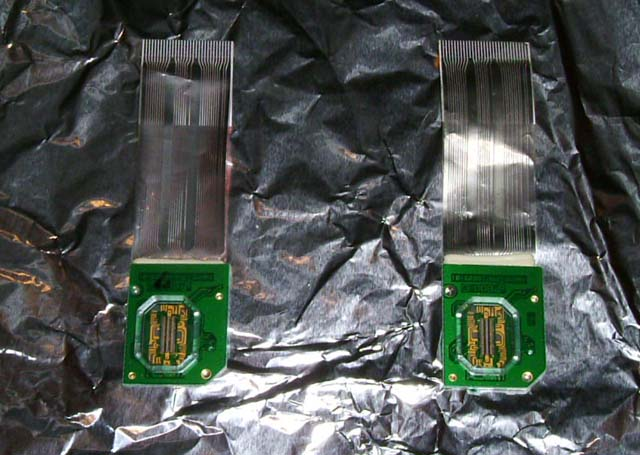
Once the oven is preheated, put the displays in until the cables soften
up (wait until the cables lay pretty much flat). There's no need to
cook them excessively long (you don't want to melt anything), a couple
minutes should be plenty of time.
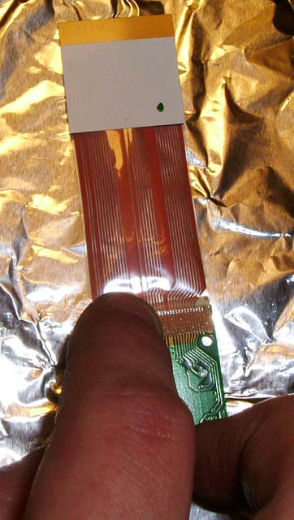
Immediately after removing the displays from the oven, flip them over
and rub the back of the cables to the PCB to ensure a good bond.
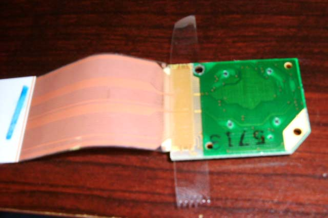
After making sure the cable is connected to the PCB well, I suggest
reinforcing the cable with a piece of tape. I cut thin strips of clear
packing tape as it resists stretching and the adhesive is good, but
other tapes probably work as well.

Then wrap the tape around the display. Be sure to tape it as shown so
the tape can't come loose since it will be screwed up against the
plastic housing.
And then of course reinstall the display reverse of the removal.
Solder Method:
First, let me explain the cable a little bit. The cable itself is a type called Flat Flex Cable (FFC), also sometimes called Flat Printed Circuit (FPC). It's a thin flexible cable with a clear laminate and copper for the conductor. There are many types of FFC, and I'm not 100% sure of the specifics of the type used on the VB, but I have made some assumptions which seem correct from my observations. The laminate is a Polyimide, which is strong, high heat tolerant, and chemical resistant. The copper is standard copper (rolled thin), attached to the polyimide with an adhesive (acrylic and epoxy adhesives seem common, not sure which one is used, but it doesn't really matter).
All of the information is AS-IS for informational use only. I'm not a chemist or an expert in this field, I am just reporting from my own observations and research I have done, so if you try any of this, you're doing it at your own risk... I'm not responsible if you try any of this and something goes wrong. Do your own research, and make sure you're comfortable with what you're doing before doing anything, and remember SAFETY FIRST.
Anyway, the challenge was to remove some of the laminate to expose the bare copper, so it could be soldered down to the copper on the display PCB. The problem is that the coating is very chemical resistant, and also that the copper is very thin, so physically removing the coating with a knife or soldering iron easily damages the copper cable. I read that Polyimides are very resistant to chemicals except hot Sodium Hydroxide (NaOH, AKA Lye, typically used in drain cleaners), and possibly hot Sulfuric Acid. Sulfuric Acid would damage the copper though, and I'm not sure of a good place to buy it (besides removing it from my car battery), and it's pretty dangerous to work with. NaOH is easy to find, I was able to pick up a large container of it at the hardware store (drain cleaner section) for about $8, and it doesn't damage the copper. You still need to be careful working with it, but chemical resistant gloves and goggles, along with adequate ventilation should be fine.
When buying the drain cleaner, make sure it is Sodium Hydroxide (NaOH, Lye), not one of the other chemicals that are sometimes used as drain cleaners.
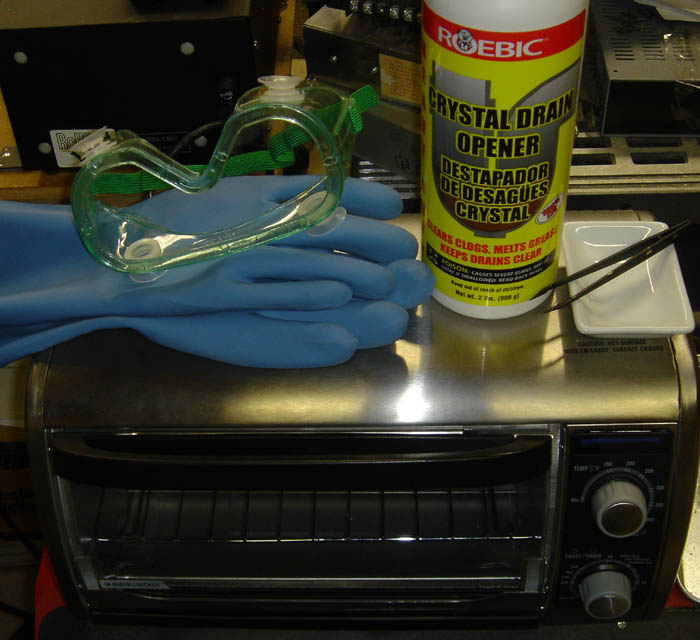
To do this, first preheat the oven/toaster oven to about 200F, and turn it off when it is pre-heated. I don't know whether the small amount of fumes from the NaOH are harmful, but I'd recommend not using your good oven/toaster oven to do this.
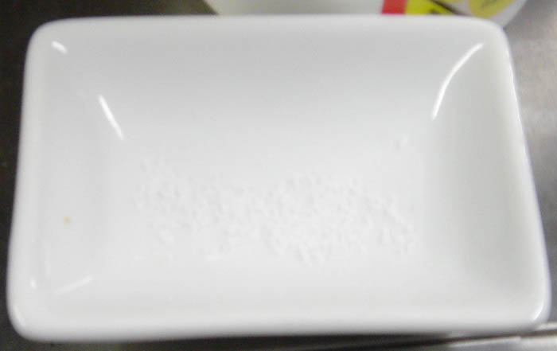
Pour just a very small amount of NaOH crystals into a chemical resistant container (I used a small ceramic bowl).
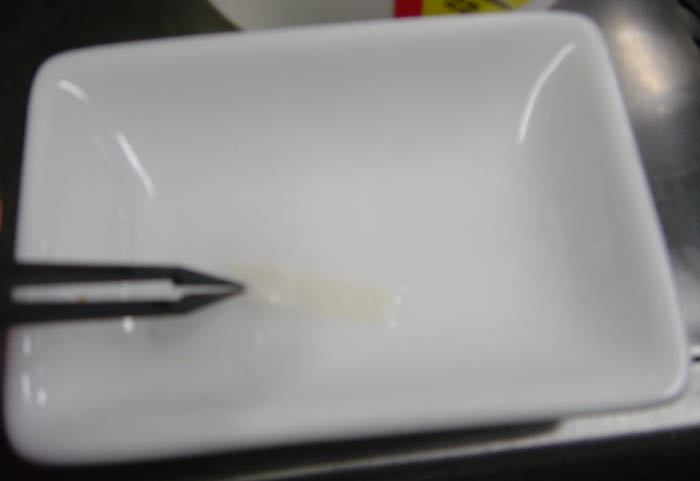
Then add just a few drops of water and move the water around until the crystals dissolve (don't add too much water or it will dilute it too much). The chemical reaction will make some heat, but if it doesn't dissolve, you can take a hair dryer and heat it up, and it will dissolve. Then soak a thin strip of paper towel in the solution.
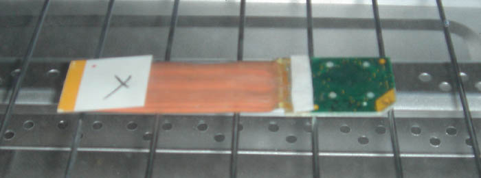
Place the soaked paper towel over the edge of the display cable and let it sit in the oven for a few minutes.
Make sure the oven is turned off, but still warm for this step. The radiant heat from the oven burners will curl the cable very quickly if they turn on (at least in this toaster oven).
Just keep watching it, and periodically pull up the paper towel and check whether the laminate has dissolved yet. Once you see bare copper, pull it out. You don't need to really worry about leaving it in too long though, since neither the copper nor the PCB are easily damaged by the NaOH. You should then neutralize the NaOH. I typically carefully wipe the area to remove any standing puddle of the solution, then carefully but thoroughly rinse the area with water to remove any traces of the chemical. You could probably also use a mild acid, like a water/vinegar mix, and wipe the area as well. There may also be a small amount of adhesive left which can be removed with Goof Off or something similar.
Be very careful not to get water, or especially chemicals, on or under the clear plastic window on the front. When rinsing, it's easy to get water to run on the front of the display, which easily seeps underneath the window. If any moisture gets underneath there, it must be removed before hooking it back up. Pressing on clear tabs on the back where it goes through the PCB creates a small gap, which you can then use a paper towel to wick most of the liquid out with, and then use a hair dryer or something similar to evaporate the moisture and cause it to escape through the gap. The NaOH will cloud up the window, so be extremely careful not to get any on the window.
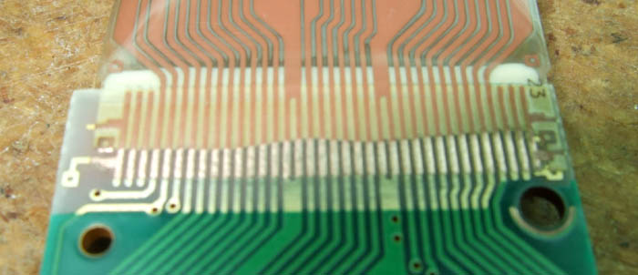
This is what it looks like after dissolving the laminate. I used a fiberglass pencil to clean the copper contacts and bare copper cable, although that's not required.
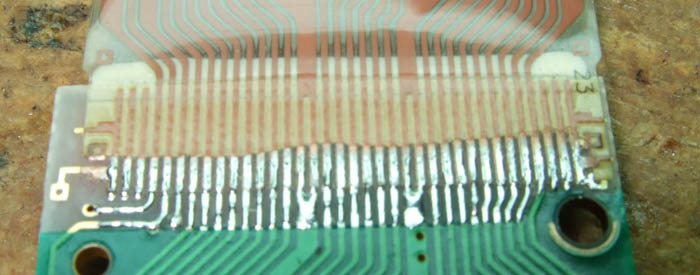
Then, I soldered it. It is a pretty fine pitch, so you have to be careful, and use a clean soldering iron and plenty of flux.
This method has worked really well for me the several times I've done it, and it really doesn't take a lot of effort once you have everything set up. There are some other slightly different methods which can also be used to be able to solder the cable.
One method involves the same NaOH on the paper towel. But rather than putting it in the oven, you can press it against the cable with a heated clothes iron for a couple minutes. This method works well, but you need to be really careful not to squeeze out the chemical and have it drip onto the clear plastic window on the front. The chemical also damaged the finish on my iron, so I'd recommend not using your good iron (I bought a cheap iron at Goodwill specifically for this kind of stuff).
The other method can be done without any chemicals or heat, although it's more difficult to do well. Rather than dissolving the laminate, you can use a knife to scrape it away, leaving the bare copper. You need a good sharp knife tip, and just lightly scrape the laminate until you reach the copper. Be careful not to scrape too hard or you can tear the really thin copper. Once you have the copper exposed, solder it as shown above.
Some notes on all of these methods:
Since the copper in the cable is very thin, it can be very easily damaged by too much heat. Make sure to turn your soldering iron down to a low temp. On my temperature controlled iron, I had good results at 450F-500F, and damaged several pins at 650F.
When using NaOH, make sure you neutralize it after you're done dissolving the cable (in whichever method you try). If you don't, it's possible that it'll further damage the cable if left there for too long, and it could damage your soldering iron tip, or give off harmful gases when heated by your soldering iron, and really, you just don't want NaOH residue on your display. I'm not sure what the best way to neutralize it is though. I've been just running it under water for a long time, which eventually rinses it off/neutralizes it (after a minute or so). It could probably be neutralized better using a mild acid, like diluted vinegar, although you'd need to be careful not to cause a reaction (like the baking soda and vinegar volcano). Although I don't recommend touching it, if you do touch it and it feels slippery, you need to rinse/neutralize it some more.
Because of the problem of getting moisture under the cover, one thing that might work well is neutralizing the NaOH with a Q-tip dipped in a mild acid and rubbing just the spots that had contact with NaOH. Then use another Q-tip or paper towel to wipe with water, and then dry. This should prevent getting water/chemicals underneath the cover when neutralizing, although you still need to be cautious when working with the chemicals in every step to keep them from making contact with the cover.
{kind=link}